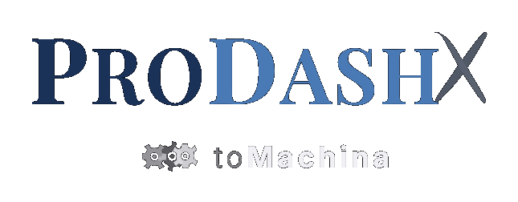
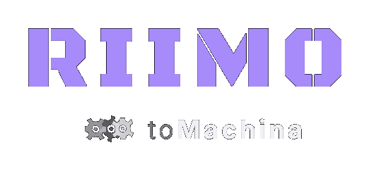

What toMachina Is
toMachina isn't a vendor product. It IS the business. Built from the inside by someone who lives every workflow, every data flow, every client touchpoint. Not purchased. Not configured. Forged.
Before
- GoHighLevel for CRM
- Google Sheets for everything else
- 6 disconnected GAS engines
- Manual data entry across systems
- No pipeline visibility
- No compliance automation
- Josh is the bottleneck
After
- 3 purpose-built portals — one for each channel
- One unified database — 29K+ normalized docs
- 88 API routes — every action is an endpoint
- 14 automated pipelines — every workflow tracked
- Self-enforcing compliance — 43 immune system rules
- AI-ready infrastructure — MDJ plugs in, not bolts on
- The team is armed — no bottleneck
Three Portals. One Platform.
Each channel gets its own front door. Same data, same engine, same modules — different brand, different permissions, different mission. Change once, all three update.

The team's daily driver. Clients, accounts, pipelines, communications, quoting — everything the Sales and Service teams touch, in one place.

The command center. Team performance, compliance oversight, analytics, pipeline health, and the Leadership Center — built for executive leadership.

DAVID's war room. Deal pipelines, book analysis, partnership proposals, acquisition onboarding — the DAVID Division's domain.
What Makes It Transcendent
A platform is a tool. A transcendent platform is an organism — it sees, it learns, it enforces, it adapts, and it turns every person who touches it into something they couldn't be without it.
It doesn't live in one industry
Health + Wealth + Legacy, unified. Every competitor picks a lane. toMachina erases the lanes.
It doesn't live in one channel
B2C, B2B, B2E — three portals, one brain. Everyone else has three different vendor stacks duct-taped together.
It has its own immune system
43 rules, self-enforcing. PHI never leaks. Credentials never hardcode. Violations get logged and the system gets smarter. No human in the loop.
It has its own nervous system
ATLAS knows where every piece of data comes from, how it moves, and what's broken — before anyone else does. 54 sources mapped.
It wasn't bought. It was forged.
Not Salesforce with a skin. Not Wealthbox with plugins. Ground-up, from nothing, for exactly this business, by the person who IS the business.
It's AI-native, not AI-bolted
The Executive.AI Team lives inside the platform — 6 warriors (SHINOB1, MEGAZORD, VOLTRON, MUSASHI, RONIN, RAIDEN), bilateral Slack channels, real-time dispatcher. JDM directs from anywhere; warriors build, review, guard, and ship autonomously.
Provable. Not Promised.
This isn't a pitch deck. Every number is live. Every claim can be demonstrated by logging in and watching it work.
DAVID forges the deals. toMachina arms the team.
MDJ ignites our Enterprise Value.